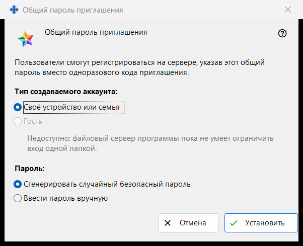
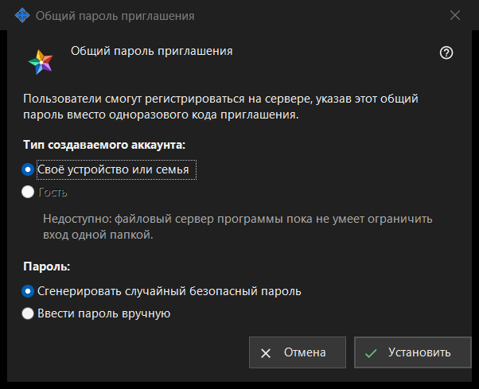

Общий пароль приглашения
Назначение
В этом окне задаётся один общий пароль, с которым пользователи регистрируются на сервере вместо одноразового кода приглашения. Окно открывается, когда вы отмечаете «Общий пароль приглашения» в группе «Приглашения» настроек сервера обмена, или кнопкой «Задать общий пароль..» рядом.


Порядок действий
- Выберите тип аккаунта.
- Выберите, сгенерирует ли пароль программа или вы введёте его сами.
- Нажмите «Установить».
- Если пароль сгенерирован, скопируйте его в окне, которое показывает его один раз.
- Чтобы перестать принимать этот пароль, снимите отметку «Общий пароль приглашения» и подтвердите.
Элементы окна
Тип аккаунта
«Тип создаваемого аккаунта:» предлагает «Своё устройство или семья» и «Гость». «Гость» отключён, а строка под ним называет причину: файловый сервер программы не может ограничить вход одной папкой. Если общий пароль уже включён, его текущий тип выбран заранее. Если этот существующий тип - «Гость», кнопка «Установить» отключена; общий пароль при этом можно выключить.
Пароль
«Пароль:» предлагает «Сгенерировать случайный безопасный пароль» (выбрано по умолчанию) и «Ввести пароль вручную». После «Установить» введённый вручную пароль запрашивается в окне пароля, которое проверяет правила: не короче 10 символов, с заглавной и строчной латинской буквой и цифрой. Отмена в этом окне возвращает сюда.
Установить
«Установить» отправляет серверу пароль и тип аккаунта и включает общий пароль; на странице появляется «Общий пароль приглашения сохранён и активирован.», а строка под флажком показывает «Общий пароль включён (тип аккаунта: ..).» Сгенерированный пароль показывается один раз в отдельном окне: скопируйте его там, прочитать его снова нельзя. Любой, кто знает пароль, может зарегистрировать аккаунт выбранного типа, поэтому передавайте его только тем, кого хотите допустить.
Выключение
Снятие отметки спрашивает: «Отключить общий пароль приглашения? Новые регистрации по нему станут невозможны.» Ответ по умолчанию - «Нет». После «Да» на странице появляется «Общий пароль приглашения отключён.», а строка под флажком показывает «Общий пароль выключен.»
Отмена
«Отмена» или Esc закрывают окно, ничего не меняя. Если вы открыли его, отметив флажок, флажок возвращается в прежнее состояние.
Настройки менеджера · Настройки общего доступа SFTP · Настройки сервера обмена